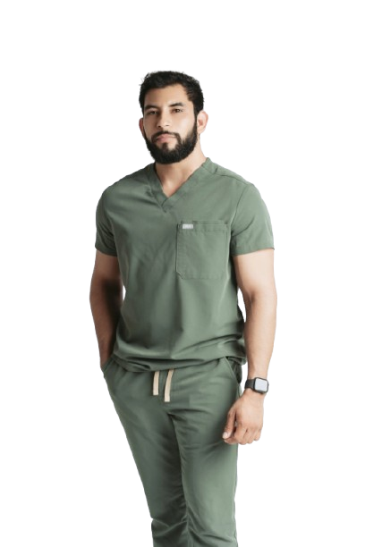

Mi historia
Soy Carlos Zepeda, licenciado en nutrición con formación académica
sólida y experiencia clínica, enfocado en ayudarte a lograr
resultados reales sin caer en extremos.
Mi trabajo combina
ciencia, empatía y practicidad. No se trata solo de darte un plan
de alimentación, sino de enseñarte a entender tu cuerpo y tomar
decisiones que puedas sostener en el tiempo.
Estoy convencido
de que una buena alimentación no debe ser complicada, costosa ni
difícil de mantener. Por eso, cada proceso está diseñado para
adaptarse a tu estilo de vida, no para imponerte un sistema
rígido.
A lo largo de mi experiencia, he acompañado a
personas con distintos objetivos: desde pérdida de grasa hasta
mejora en su salud metabólica y rendimiento físico.
Mi objetivo es que dejes de depender de una dieta y desarrolles la
capacidad de mantener tus resultados por tu cuenta.
Formación y credenciales
Universidad Autónoma de Durango, Campus Tijuana (2015 – 2019)
Nutri Empresarios, Enero del 2019
(SMO), Diciembre 2020
(SMO), Septiembre 2021
(SMO), Septiembre 2023
Colaboración con instituciones hospitalarias como Hospital Ángeles y Unidad Quirúrgica Galans
Socio activo de la Sociedad Mexicana de Obesidad, Mayo 2026, CP: 14396963
Mi filosofía
La idea tradicional de "estar a dieta" ha dejado de ser efectiva para la mayoría de las personas. La nutrición debe ser práctica, sostenible y aplicable a la vida diaria: se trata de aprender a disfrutar lo que comes, entender cómo responde tu cuerpo, tomar mejores decisiones en tu día a día y construir hábitos que realmente puedas mantener.
No necesitas una alimentación limitada o repetitiva para lograr cambios. Es posible avanzar hacia tu objetivo incluyendo alimentos que disfrutas, siempre que exista una estrategia bien estructurada.
Trabajo bajo un enfoque clínico integral que considera tanto tu salud metabólica como tu estilo de vida.
Optimización de resultados con base en tu contexto: tus horarios, tus hábitos y tus objetivos.
Aprende a tomar mejores decisiones para que el proceso funcione dentro de tu vida diaria.
Integración real entre tu alimentación y tu rutina de ejercicio para potenciar tus resultados.
Agenda tu primera consulta y da el primer paso hacia una alimentación que funcione para ti.